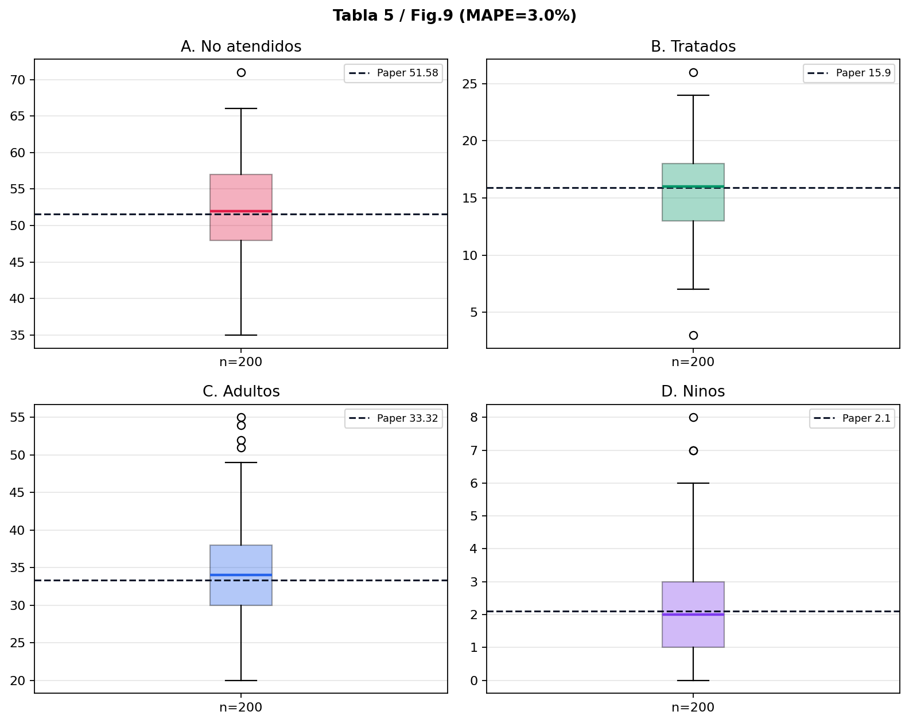
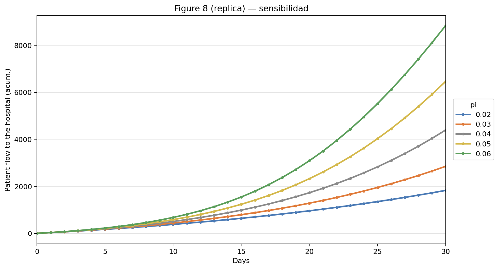
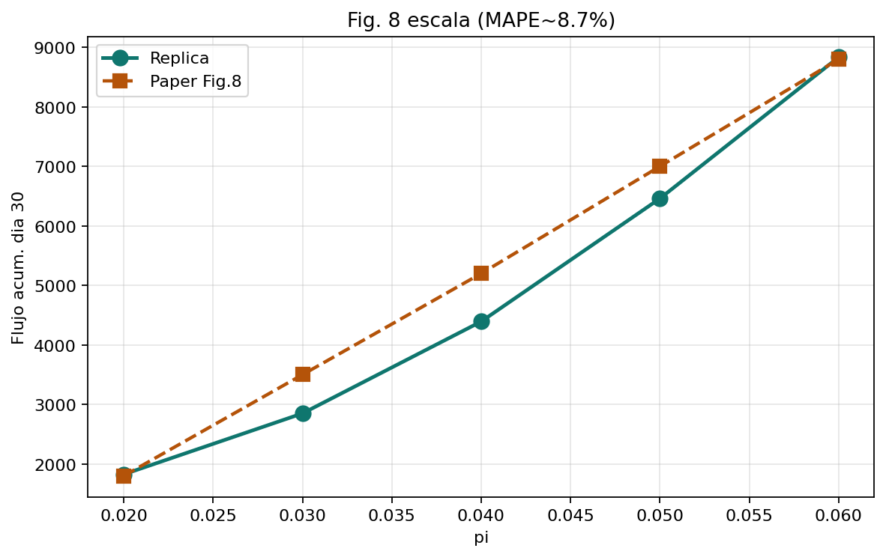

Capacidad hospitalaria
bajo picos COVID
¿Cómo anticipar demanda, colas y personal cuando la epidemia satura el hospital?
Tres niveles, una simulación
Macro · System Dynamics
- Niveles: Susceptible, Infective, goToHospital
- Demanda epidémica agregada
- ¿Cuánta gente busca hospital?
Meso · Agent-Based Modeling
- Médicos, enfermeras y auxiliares
- Estados + mensaje Infection
- ¿Cuánto personal sano queda?
Micro · Discrete-Event Simulation
- Cola, triage, camas y egreso
- 80 camas · tiempos triangulares
- ¿Quién entra o se va sin atención?
De dónde salen los números
Datos del artículo
- Historial hospitalario → Tabla 3
- Población ≈ 123 182 (Orizaba)
- Hospitalización 4–20 % (fuente nacional)
- Tiempos de estancia: triangulares Tablas 1–2 (sin tocar)
Parámetros de entrega
- Fijos: 80 camas · 50 ventiladores · 50 prono
- contacRate = 2,65 · Infective inicial = 3400 · patientToHospital = 0,009
- probabilityOfTransmission base = 0,04 (rango Figura 8: 0,02–0,06)
Tratamiento de la estocasticidad
i. Análisis de entrada
- Ajuste de distribuciones: tiempos de estancia y demoras con triangular (mínimo / moda / máximo de Tablas 1–2 del artículo)
- No se recalibraron esas distribuciones: se respetó el paper
ii. Semillas pseudoaleatorias (streams)
- Cuatro streams independientes:
rngSed,rngAbm,rngGate,rngBranch - Semilla distinta por réplica (
randomSeed) para no correlacionar corridas
iii. Diseño de experimentos
- Factor: probabilityOfTransmission ∈ {0,02; 0,03; 0,04; 0,05; 0,06} (Figura 8)
- Escenario base: probabilityOfTransmission = 0,04 · modelo con streams
- Respuestas: untreated, treated, adultAdmit, childAdmit, hospitalFlow acumulado
iv. Análisis de salida
- 200 réplicas independientes · media ± intervalo de confianza 95%
- Error porcentual absoluto medio frente a Tabla 5 y Figura 8
Comunicación bidireccional en vivo
Acoplamiento (mismo reloj)
si goToHospital > 0 ⇒ goToHospital−− e inject(1)
② Agent-Based Modeling → Discrete-Event Simulation
capacity = número de personal en Susceptible
③ Discrete-Event Simulation → Agent-Based Modeling
send("Infection", staff.random())
④ Agent-Based Modeling → Discrete-Event Simulation
personal hospitalizado como paciente
Qué dice el paper — y qué no
Hallazgos / políticas
- Triage dual, módulos COVID y prono mejoran Tabla 5
- Figura 8: mayor probabilityOfTransmission → mayor hospitalFlow
- Proponen anticipar saturación con el híbrido
Lectura crítica
- Figura 8 y Tabla 5 son análisis distintos
- No hay un único ajuste publicado que clave ambos
- Figura 7 no es del híbrido → fuera de alcance
Modelo parametrizado y cuadro de mando
Implementación
- forceOfInfection = contacRate × prevalenceOfInfection × probabilityOfTransmission
- Puente goToHospital → inject en Discrete-Event Simulation
- Streams independientes en Additional class code
Modelo_Entrega5_Hospital_Hibrido_streams.alp
Dashboard en vivo
- Sliders: contacRate, probabilityOfTransmission, patientToHospital
- Indicadores: untreated, treated, admits, Susceptible / Infective
- Capacidad de personal ajustable
Fidelidad cuantitativa
Tabla 5 / Figura 9
| Indicador | Réplica | Paper | Desvío |
|---|---|---|---|
| No atendidos | 52,2 | 51,6 | +1,1% |
| Tratados | 15,6 | 15,9 | −1,8% |
| Adultos | 34,4 | 33,3 | +3,3% |
| Niños | 2,0 | 2,1 | −5,7% |
Error porcentual absoluto medio Tabla 5 3,0% · Figura 8 ≈ 8,7%



Qué nos dejó el híbrido
Académico
- El valor está en el acoplamiento, no en tres modelos sueltos
- Validar = error porcentual absoluto medio e intervalos de confianza
Técnico
- Puente continuo → discreto con goToHospital
- Streams independientes sin romper la calibración
Entrega
Priorizamos Tabla 5 / Figura 9 (error porcentual absoluto medio 3,0%) y la forma de la Figura 8 (8,7%), con demo en vivo.
Transparencia, referencias y entrega
Contribuciones del equipo
| Miembro | Rol | Contribuciones |
|---|---|---|
| Samuel Herrera | Arquitectura híbrida | Integración de paradigmas y unidades |
| Katherinne Olaya | Análisis y rigor | Artículo, datos y diseño experimental |
| Fredy García | Implementación | Flujos, réplicas y sensibilidad |
| Ever Muñoz | Validación / entrega | Dashboard, errores, paquete y presentación |
Declaración de inteligencia artificial
Se usaron ChatGPT, Gemini y Claude (~30–40% del material auxiliar) para ideas, organización, revisión de código y gráficas. El equipo auditó ecuaciones, corridas y resultados. Sin plagio directo.
Cita del artículo (APA 7.ª)
Meza-Palacios, R., Aguilar-Lasserre, A. A., Moras-Sánchez, C. G., & Vázquez-Rodríguez, C. F. (2026). Development of a hybrid simulation model for hospital capacity in health emergencies. Journal of Simulation. https://doi.org/10.1080/17477778.2025.2610014
Bibliografía complementaria
- Teoría Anderson, R. M., & May, R. M. (1991). Infectious diseases of humans. Oxford University Press.
- Híbridos Borshchev, A. (2013). The big book of simulation modeling. AnyLogic.
- Datos Pérez-Tezoco et al. (2023); Secretaría de Economía (2024); Secretaría de Salud (2024).
Repositorio del proyecto
Modelos AnyLogic, CSV, gráficas, diagramas y documentación completa:
[PEGAR ENLACE DEL REPOSITORIO GITHUB]
Sugerido: https://github.com/Saanhevi/Proyecto-Modelos-y-Simulacion